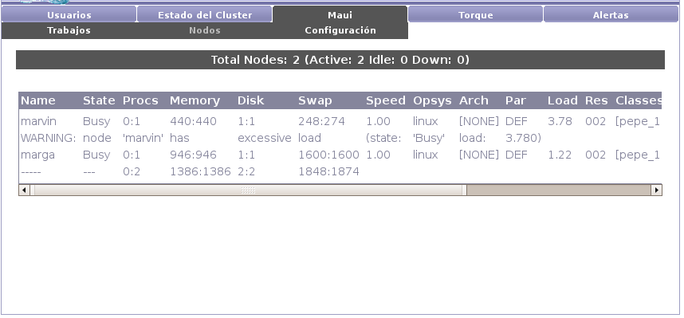

Next: Configuración Up: Maui Previous: Trabajos Contents

Maui presenta también información de los nodos del cluster: estado (activo, ocioso, disponible, etc.), cantidad de procesadores (disponibles y utilizados), cantidad de memoria (disponible y utilizada), sistema operativo, etc.